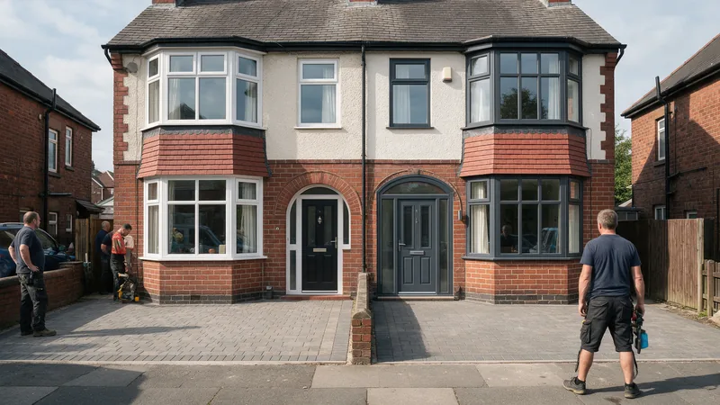

Sample coverage
Windows and doors in Penketh.
Replacement windows, composite front doors, bifolds and patio doors, sash window repairs, misted glass units and repairs in Penketh and round about. Penketh is a real town. Sashmoor Windows and Doors is not a real firm, and this is sample coverage on a demo site.
What we get asked for in Penketh
Mostly the same two things as everywhere: windows that have come to the end of their life, and a front door somebody has been meaning to change for three years. What varies from town to town is the houses. In Penketh it tends to be a mix of dormer bungalows and semis, which usually means one big window at the front and a patio door at the back.
So a visit here starts the same way every time. What are you looking at, what is it doing, and is this one job or the start of doing the whole house a bit at a time. Then every opening measured on its own, and the awkward ones found at the survey rather than on fitting day.
Doing it in stages
Plenty of people round here do the front of the house one year and the back the next, and there is nothing wrong with that as long as somebody writes down exactly what went in the first time. Frame colour, opening pattern, handle style and the glass. Two years later that note is the difference between a house that matches and a house that nearly matches.
If that is your plan, say so at the survey. It changes which windows we would do first, and it is usually not the ones people expect.
Getting to you
We are based in Warrington and Widnes Sample and Penketh is on the list of towns we cover most. We are not going to print a response time, because that would be an invented figure on a demo site. Ring and you will get a straight answer about the week.

Generated photoGenerated for this demo. Not a photograph of Penketh.
In Penketh
What we would come out for.
Replacement windows
Whole houses and single openings. Measured properly, made to those sizes, and fitted without taking the plaster off with them.
More →Composite and front doors
A solid door, a frame that fits the opening, and a lock that works with one hand full of shopping. Colour, glass and furniture your pick.
More →Bifold and patio doors
Bifolds that stack back and leave the opening clear, sliders that pass behind each other, and french doors where the opening is narrower.
More →Sash window repair and replacement
Cords, weights, beads and draughts put right on the originals, or a new sash window made to the same sightlines when the timber has gone.
More →Misted glass unit replacement
Cloudy glass with the frame still sound is a new sealed unit, not a new window. Usually a short visit and the smaller job by a long way.
More →Window and door repairs
Handles, hinges, locks, gaskets and the mechanism down the edge of a door. The parts wear out long before the frame does.
More →Nearby
The other towns on the list.
- Stockton HeathWindows and doors in Stockton Heath
- Great SankeyWindows and doors in Great Sankey
- RuncornWindows and doors in Runcorn
- LymmWindows and doors in Lymm
Sample coverage for this demo.
Looking at the windows in Penketh?
Tell us what you are thinking about and your postcode and we will book a survey. If the glass has gone, use the urgent line.